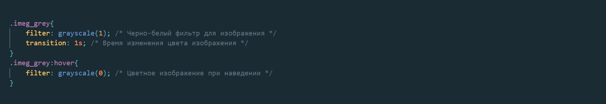
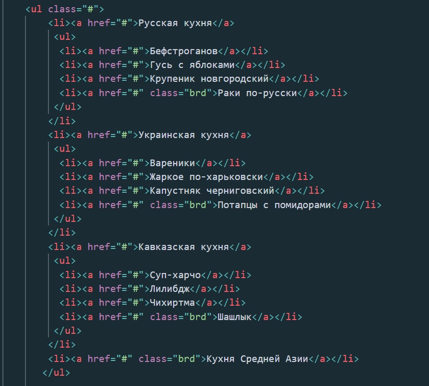
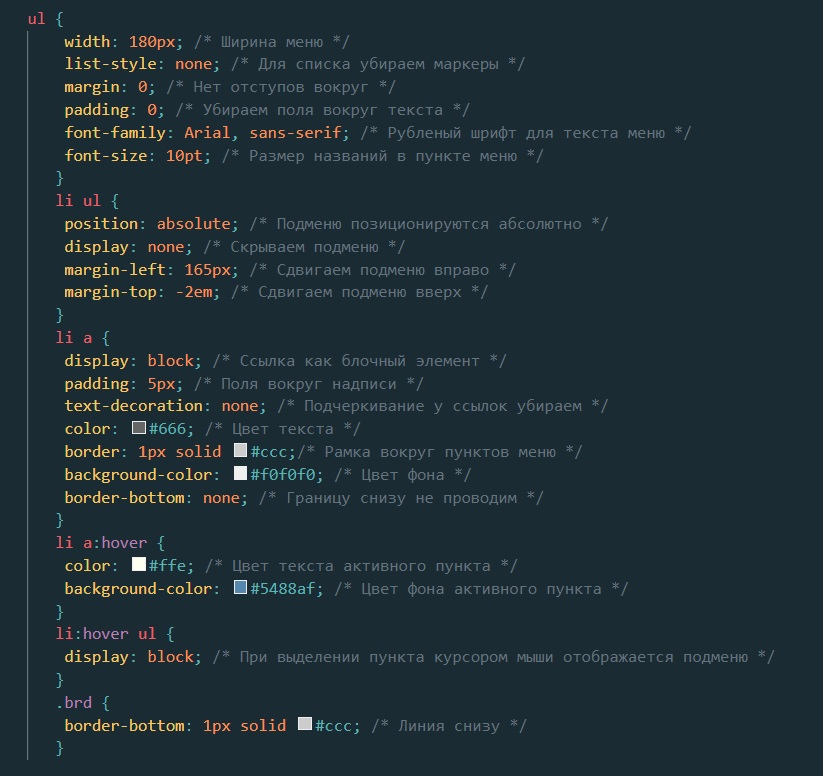

На данном уроке разберем тэг < img/> в себе он имеет три параметра src = куда вкладывается ссылка расположения картинки сюда может быть вложен адрес
локального расположения картинка (на компьютере или в самом проекте) или ссылка на удалённое расположение допустим какой ни будь сайт где эта картинка лежит или
облако. Alt = этот параметр отвечает за то чтобы отображать альтернативную информацию на случай если вдруг картинка была удалена повреждена или к ней был заблокирован
удалённый доступ. В данный параметр мы вкладываем описание того что должно быть отображено или краткое описание.
И последний параметр это title это всплывающее описание картинки если на него навести мышку сюда можно указать пояснение картинки или адрес своего сайте если
это реклама оно будет просто всплывать и не будет клика бельно.
Давайте теперь разберемся как это работает:
< img src="" alt="" title=""> в данном примере я добавил параметр title. Для ночала давайте просто подключим сюда картинку из локального хранилища (Из нашего Проекта)
Если мы имитируем повреждение картинки то за место этой картинки мы увидим ярлык этого повреждения и текст который мы вложили в параметр alt

Мы видим что картинка выводит альтернативный текст который был вложен в параметр
alt
теперь давайте рассмотрим на параметр title который должен выводить небольшое меню
возле курсора если его навести на картинку
Эта функция будет работать и с не работающим текстом
Теперь давай те поговорим о стилях.
По мимо того что можно работать с размером картинки и ее местоположением
Давайте попробуем ее немного уменьшить в данном примере я добавлю в параметры класс картинки
В стиле я задал параметр width: 300px; где площадь картинки равна 300 пикселям при этом картинка сжалась только на странице и нам не надо ее копировать и конвертировать размер
теперь давайте разберемся с параметром hover. Данный параметр позволяет делать что то с тегами или картинками при их наведении. Сам параметр прописывается в стилях.
Допустим если этот параметр подключить к картинке то при наведении она будет увеличиватся или менять цвет. Так же при помощи можно сделать всплывающие меню при помощи тэгов.
Давай те сделаем картинку бесцветной и при наведении что бы она приобретала цветовую гамму
Как видим при наведение курсора на картинку она становится цветной
Теперь давайте разберемся как это работает. Для этого на нужно определить тэг < img > куда мы вставим нашу страничку
В коде это будет выглядеть таким образом
В тэг мы вписываем адрес нашей картинки ее альтернативные значения и титульные параметры и определили его как класс "imeg_grey". Теперь по определенному классу мы обратимся в нашем стиле и это будет выглядеть таким образом.
Теперь давайте разбираться в параметрах: В классе .imeg_grey мы включили два параметра filter который позволил нам обесцветить нашу картинку
полное описание данного параметра тут
и параметр transition который позволяет нам задать время отклика в нашем случае это за какой промежуток времени при наведении он станет цветным
значение параметра в секундах
полное описание параметра тут
во втором блоке мы уже обращаемся к классу через hover параметр который реагирует на движение курсора. Обратите внимание на то что обращение идет через двоеточие
.imeg_grey:hover где внутри мы изменили значение обесцвечивания на исходный параметр.
Так же существую много других разных надстроек для картинок где предоставлены функционал с исходным кодом как пример(Ссылка на ресурс)
Так же можно делать под меню или то на что хватит фантазии так как применений множество.
Давайте рассмотрим какое то под меню с использованием hover. Для этого давайте создадим таблицу.
Тут мы видим как работал бы код без применения стилей. Сам код выглядит таким образом:
Давайте теперь добавим вставим стили сам код в CSS будет выглядеть вот таким образом
Теперь давайте посмотрим как это будет работать уже на функционале
Если наведем мышкой на один из столбцов то выводится ячейки подменю.
В данном примере я использовал тэг < a> Это открытый тэг в который можно добавить значение. По сути является ссылочной кнопкой для перехода куда либо.
При дополнительных настройках можно превратить в кнопку полноценную.
Как пример что можно сделать с данным тэгом
Посмотреть можете и потом давайте разберемся вообще что такое кнопки какие их виды бывают и для чего нужны.
Тег < a> это открытый тэг в который можно вписывать параметры ссылки перехода Пример: "< a href="сюда можно вложить любую ссылку">"
Чаще всего является ссылочной кнопкой для путишествия по сайту или переходом на любую страничку закрепленной по данной ссылке.
В качестве примера создадим ссылку для перехоа на сайт mail.ru:
Сылка перехода на Mail.ru "Клик сюда"
Таким образом в параметр href мы внесли адрес сайта на который можно переидти Чаще всего используется как сыслка перехода или везитной ссылки на телеграмм или whats apр
Так же сюда можно поставить ссылки по локальному переходу внутри сайта. Как пример давайте создадим еще одну страницу в нашем проекте учебникеи продолжим там